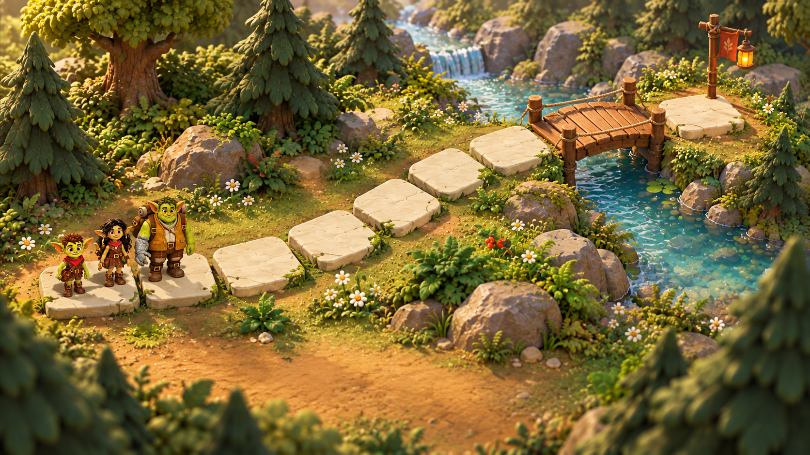
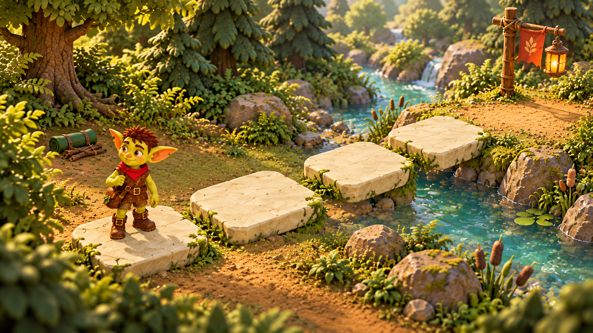
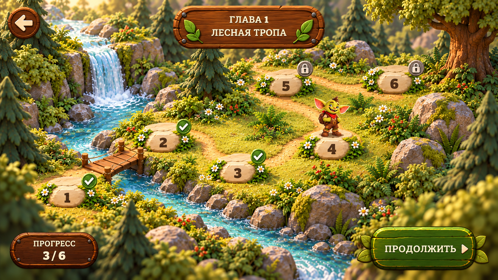
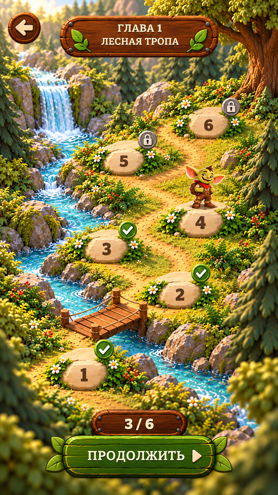

Перенести в окружение
Тёплую спокойную площадку опор; характерную толщину камня; асимметричные группы деревьев; плавное соединение берега с водой; локальный янтарный ориентир выхода. Вокруг игрового пути мелкий декор ещё сократить.
Первая художественная подача: подтянуть игровую диораму к уровню персонажей, связать её с иллюстрированной картой главы и сохранить объёмный деревянный интерфейс.
Крупные формы деревьев, тяжёлый известняк, естественный берег и спокойная земля вокруг игрового пути. Выход отмечает короткая ткань и янтарный фонарь.

Четыре оставшиеся плиты, отдельная цель на земле, открытый силуэт героя. Позади — обычная лесная поляна; куст слева задаёт направление голоса Царапа.

Сохраняем уже внедрённые скрытие опор 0–3 и стартовое приближение. Не переносим возможные неточности ушей и одежды из генерации на модель Тиша.
Компактнее заголовок, спокойнее площадки, цифры открыты. Галочки и замки сидят в общем углу. 2D-Тиш стоит на камне текущего уровня.

Последовательность поднимается от нижнего моста к верхней поляне. Все шесть узлов видны; прогресс и основное действие находятся внизу.

Тёплую спокойную площадку опор; характерную толщину камня; асимметричные группы деревьев; плавное соединение берега с водой; локальный янтарный ориентир выхода. Вокруг игрового пути мелкий декор ещё сократить.
Прыжковую дугу, открытый HUD и диалоги, контакт ног, четыре оставшиеся опоры первого уровня, длинные русские/английские строки и safe areas. Камера не реагирует зумом на текст. Листья и фигурные торцы не тянутся.
Быстрая проверка иерархии концептов. Настоящие размеры нажатий, локализация и поведение UI проверяются отдельно в Unity и на устройстве.
640 × 360 CSS-пикселей
360 × 640 CSS-пикселей